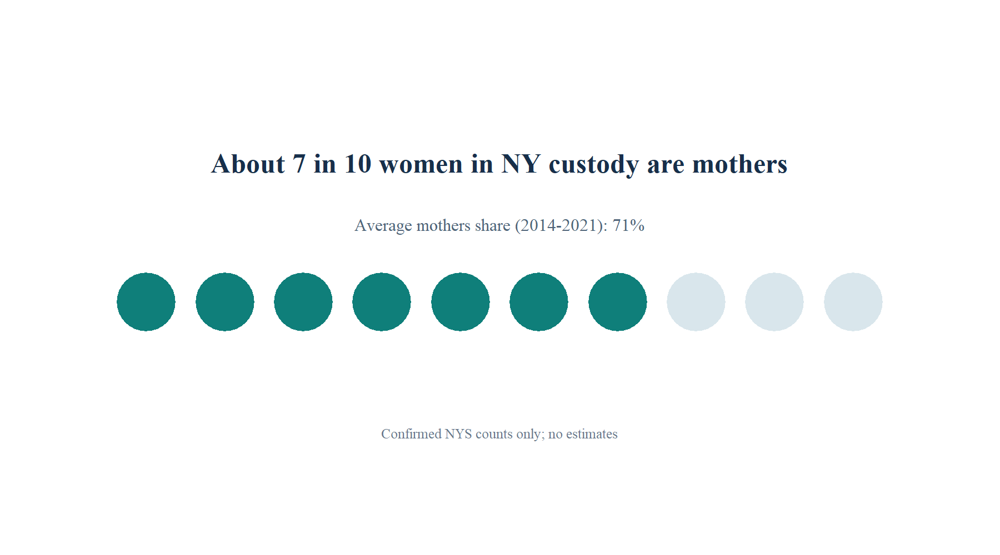

Core Finding
About 7 in 10 women in NY custody are mothers
Graphic Snapshot

Use this as the headline visual when sharing or embedding the dashboard.
Mothers Share Trend vs 70% Benchmark
Hover points for details. Click a point to update the selected-year profile and KPI cards.
Selected-Year Custody Composition
Pie chart updates with the selected year and shows mothers (1+ children), no-children records, and unknown child-status records from DOCCS Table 7.
Selected Year Profile
Confirmed counts and context for the selected year.
Where Women Are Held in NYS
Facility context map for women’s facilities in this series period: Albion (Orleans County), Bedford Hills (Westchester County), and Taconic (Westchester County). Location markers are map-context points, not admissions shares.
Confirmed Table Values
Directly transcribed from NYS DOCCS under custody report tables.
| Year | Women total | Mothers (1+ children) | No children | Unknown | Mothers share (total) | Mothers share (known) |
|---|